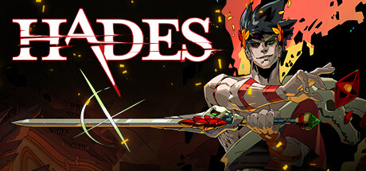
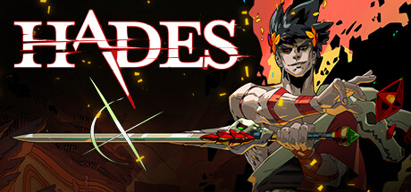

I listen to video game soundtracks, EDM, rock/metal, and orchestra genre.
My favorite music artist is Porter Robinson.
The genres of games that I like to play are MMO-RPGs, Souls-like, Rougelite, Open world survival, and Pokémon core-series (Pokémon Emerald is my favorite).
 



I really like spicy chicken wings, pizza and coffee.